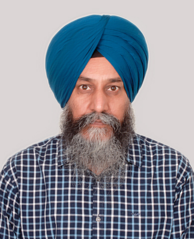

I am a PhD candidate in Economics at the University of Essex. I also completed my MSc and MRes here. My research interests include microeconomic theory, industrial organisation, and auctions.
You can find my CV here.
You can contact me at tejpal.s.sandhu@essex.ac.uk.
Personal email: tpsandhu.eco@gmail.com
Advisors: Prof Daniel F Garrett and Dr Albin Erlanson
Research
Work in Progress
Publications
Teaching
I am passionate about teaching microeconomic theory and industrial organisation. My goal is to create an engaging and supportive learning environment where students can develop the confidence to apply complex methods to real-world problems.